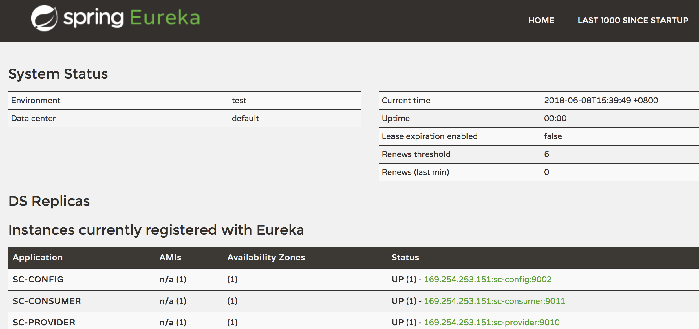
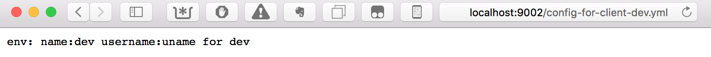
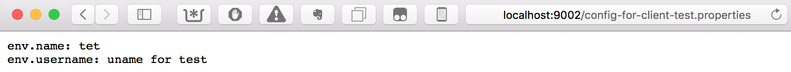
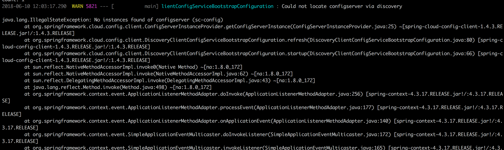

这是Spring Cloud上手系列的第七篇，代码放在GitHub上，随着本系列文章更新。
概述
通过Spring Cloud Config可以对各个系统的配置信息进行集中管理和维护。
Spring Cloud Config服务端读取git、svn或本地目录（包括classpath路径)中保存的配置信息。
将Spring Cloud Config服务作为Eureka客户端，则为Config Server提供高可用。Config Client程序可以通过Eureka获取Config Server的信息并读取配置。
Spring Cloud Config Server配置
添加依赖
Spring Config 服务相关的两个依赖是org.springframework.cloud:spring-cloud-config-server和org.springframework.cloud:spring-cloud-config-client，分别对应于配置服务的服务端和客户端。
我们先在根模块的build.gradle中添加程序库依赖。
|
|
添加config模块
在根模块下添加新的config，以它作为Config Server。将这个模块添加至根模块的settings.gradle中。
|
|
在config模块自己的build.gradle中添加config-server依赖，并配置好Main-Class：
|
|
MainClass
添加配置服务程序的入口类Application:
|
|
这里我们直接做高可用配置，添加了@EnableEurekaClient注解，这样配置服务的客户端就能通过Eureka注册中心获取配置服务器的信息。
如果不将配置服务注册至Eureka，配置中心的客户端程序仍然能通过完整的URL来访问配置服务。但无法提供高可用支持。
对服务程序进行配置
添加application.yml配置文件。
|
|
这里将spring.profiles.active配置为native，是为了使用本地目录。spring.cloud.config.server.native是针对native profile的配置，在这个配置文件里可以配置多个profile，由active确定使用哪个profile。可以创建多套不同的profile，分别用于本机开发、测试、生产部署。
添加样例配置文件
根据application.xml中指定的searchLocations，我们在config模块的src/resources目录下添加config目录来保存配置信息。在这个目录下添加以下两个配置文件：
config-for-client-dev.yml
|
|
config-for-client-test.properties
|
|
打包运行配置服务程序
在sc-cloud根模块，执行gradle build编译整个工程。然后运行
java -jar config/build/libs/sc-config-0.0.1.jar
启动配置服务程序。
启动完毕后，在Eureka注册中心中可以查看到这个新的服务。

也可以通过http://localhost:9002/config-for-client-dev.yml和http://localhost:9002/config-for-client-test.properties访问上节中的配置文件。


有几种方式可以访问到这些配置文件：
- {application}/{profile}[/{label}]
- {application}-{profile}.yml
- {label}/{application}-{profile}.yml
- {application}-{profile}.properties
- {label}/{application}-{profile}.properties
label是版本库上的分支名称，使用本地文件时，可以用master代替。application是配置文件名，一般将它设置为相应的应用名称，在我们的例子中它是config-for-client。按上述的第一条规则，通过http://localhost:9002/config-for-client/dev/master我们能获取到以下信息：
|
|
按第五条规则，通过http://localhost:9002/master/config-for-client-dev.properties可以获取到：
|
|
注意这里并不是访问的config-for-client-test.properties，获取到的信息是config-for-client-dev.yml中的内容。
Spring Cloud Config Client配置
接下来配置在provider-serveice工程，为它添加从配置中心读取配置信息的能力。
配置provider-service的依赖
在根模块的build.gradle中添加Spring Cloud Config客户端程序库。
|
|
在provider-service模块的build.gradle中添加config-client依赖。
|
|
添加测试端点
在sc-provider的ProviderController中添加从配置中心读取配置信息的测试端点。
|
|
通过/provider/config可以读取到defaultName属性，这个属性的值来源于配置中心配置文件中的sc.provider.defaultUser，如果读取不到配置中心的值，则取默认值defaultName not found。
调整配置文件
主要是添加配置中心相关的配置信息，让provider-service从配置中心读取配置。这里有个较大的调整是需要将配置中心相关的配置信息移到bootstrap.yml中，否则，应用在启动的时候会显示从http://localhost:8888中加载配置。
这是因为bootstrap.yml配置信息先于application.yml加载，特别是在使用配置中心时，需要将相关的注册中心、配置中心的信息放在bootstrap.yml中。参见官方文档。
调整完后的bootstrap.yml:
|
|
application.yml:
|
|
添加测试配置文件
在config应用的resources/config/目录下添加sc-provider-dev.yml配置文件，默认情况下配置中心客户端应用，会从配置中心按应用名称和profile读取配置文件，因此，这里的文件被命名为sc-provider-dev，即sc-provider和dev profile的配置文件。
配置文件内容如下：
|
|
编译和测试
在sc-cloud根模块下执行gradle build，编译所有工程。按以下顺序，在不同的窗口中分别启动：registry、config、provider:service三个应用：
|
|
在启动provider:service的过程中，显示完Spring Logo后的下一行，就可以看到从配置中心加载的配置信息，如果这里显示的是默认地址localhost:8888，则需要再仔细检查bootstrap.yml中的配置信息了。

启动完毕后，从http://localhost:9002/sc-provider-dev.yml检查配置信息是否能正常读取。再从http://localhost:9010/provider/config看是否能显示出配置sc-provider-dev.yml中配置的值。如果显示的值是defaultName not found，那么读取也是失败的，这个值是在从配置中心读取失败后，读取的默认值。
读取快速失败和重试
快速失败
在上一步测试的过程中，可能会因为启动顺序、网络等多种原因，导致provider:service启动时读取配置失败。默认情况下，读取失败并不会导致程序启动报错，有些情况下我们可能需要在从配置中心读取失败时及时给出提示。可以在配置中心客户端程序的bootstrap.yml配置文件中添加spring.cloud.config.failFast=true。
添加这项配置后，我们将配置中心应用停掉，并重启provider:service应用，可以看到以下报错信息：

重试读取
当出现这种情况时，更多情况下我们是希望配置中心客户端程序能重试。这时我们可以需要添加spring-retry和spring-boot-starter-aop模块来支持重试读取。默认情况下会重试6次，6次后才会返回错误信息。这可以避免因启动顺序或偶发问题产生的配置信息读取失败。
我们需要在根模块的build.gradle和ext.libs中注册这两个依赖：
|
|
保持provider:service应用的spring.cloud.config.failFast=true，然后在其build.gradle中添加依赖即可，程序本身不需要修改。需要注意的是在Edgware.SR3中，如果应用启动的时候无法连接配置中心，不会像有些文章中提及的那样重试机制会起作用，这个时候重试机制不起作用，应用会直接挂掉。在我验证的过程中，重试机制只在配置中心可连接，但没有响应（发生了不可恢复的异常）的情况下，重试机制才起作用。
|
|

配置刷新
Actuator监控端点
配置的刷新是通过Spring Boot的监控端点来实现的。到目前为止，我们只有访问http://localhost:9002/beans，即配置服务的监控端点才有响应，这是因为Spring Config Server依赖于actuator，我们不需要显式的添加依赖。对于其它服务，我们需要添加spring-boot-starter-actuator这个依赖。这个依赖除了可以用于刷新配置信息外，还带了很多监控Spring Boot服务状态的端点，因此我们把它添加到根模块的依赖中，并将它应用到除api模块之外的所有应用上。
先调整ext.libs：
|
|
自动添加至其它应用：
|
|
配置刷新方法
在刷新配置的测试中，由于需要测试修改配置中心的配置文件，我们需要先把配置中心的配置文件移至resources目录的外面。即，将这些文件不进行打包。我们先将config应用的src/main/resources/config目录移至根模块下的support目录下。然后，修改config应用的application.yml配置文件的spring.cloud.config.server.native.searchLocations属性，将它的值修改为file:config目录路径。
在ProviderController上添加@RefreshScope注解，当配置信息修改之后，我们可以通过发送POST请求至http://localhost:9010/refresh来刷新@Value注解对应的配置信息。在refresh过程中，可以从控制台查看到重新从配置中心获取配置信息的日志。
比如，修改：support/sc-provider-dev.yml里sc.provider.defaultUser的值。之后发送请求至provider:service应用（curl -X POST http://localhost:9010/refresh）。再查看http://localhost:9010/provider/config就能看到新的配置文件值。